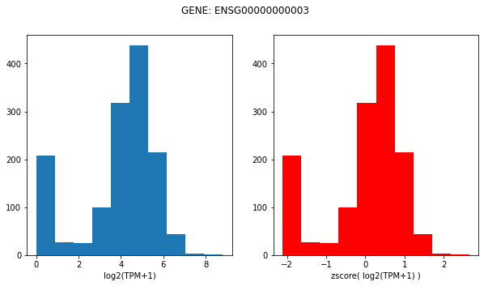

Cancer Cell Line Encyclopedia unperturbed RNA-seq expression
Data source and info
We will use the CCLE expression dataset, which can be downloaded here, more info here.
From DepMap:
Gene expression TPM values of the protein coding genes for DepMap cell lines. Values are inferred from RNA-seq data using the RSEM tool and are reported after log2 transformation, using a pseudo-count of 1; log2(TPM+1).
Additional RNA-seq-based expression measurements are available for download as part of the full DepMap Data Release
More information on the DepMap Omics processing pipeline is available at https://github.com/broadinstitute/depmap_omics.
Genes:19177
Cell Lines:1393
Primary Diseases:33
Lineages:38
Source: Broad Institute
Reactome FI Coverage
There are 403 ccle gene's lost in the mapping from gene symbol to ensembl.
13373 of 13609 reactome FI genes have coverage in CCLE expression dataset (98% coverage).
LINCS Coverage
Of the total cell lines in LINCS (n=239), 133 of them have CCLE expression data (56%); However, these 133 lines make up the majority of observations in LINCS L1000. After filtering observations that did not pass QC, these 133 lines with CCLE expression coverage made up 1.83/2.16 million LINCS observations (85%).
Z-score transformation
To make imputation and gene-to-gene expression more comparable for our GNN we will perform z-score tranformations:
Here is a visualization of the original and transformed distributions:

This can be done using the function:
expr = gnn_cdr.depmap.load_ccle_expr(zscore=True)
Accessing individual cell line expression
We can get a specific cell lines expression by using the method:
x = gnn_cdr.depmap.get_cell_line_ccle_expr(expr, cell_line, genelist)
where:
expris the pandas dataframe returned byload_ccle_exprcell_lineis the cell_iname identifiergenelistis the list of genes to return; note, genes that are in genelist but not in expr will be zero imputed.